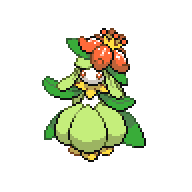
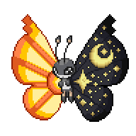
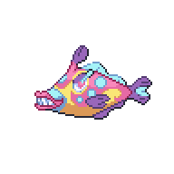
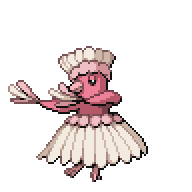
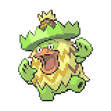
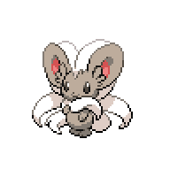

Route 3 and Phasial Cave
Route 3

| Item | Location |
Honey |
Along the river, top side |
Yellow Shard |
On the table next to the caravan |
Protein |
In the grass, near entrance to Mirage Woods |
Sitrus Berry |
In the grass, south of the entrance to Mirage Woods |
Blue Shard |
Along the right of the Route 3 path, before the Market |
Star Piece |
In a small alcove to the left of the Route 3 path, before the Market |
| Super Repel |
Left side of the Route 3 path, after the Market |
Super Potion |
In the grass, right side of the golden forest area |
Red Shard |
In the grass, left side of the golden forest area |
Honey |
In the grass, right across the bridge in the golden forest area |
Exit the gate from Sheridan and onto Route 3. Schoolgirl Lizzy
 is right outside the gate ready for a battle. After battling her, you can head over to the left and into the RV nearby. Here, we can continue our Johto quest by talking to the man inside the RV.
is right outside the gate ready for a battle. After battling her, you can head over to the left and into the RV nearby. Here, we can continue our Johto quest by talking to the man inside the RV. He'll let you battle both Whitney and Morty, which can both be tough in their own right. Use the opportunity of their weaker first Pokemon to set up before dealing with their more annoying Pokemon. The Mirage Woods is in the upper left corner, but we'll explore that later as we need an item found deeper in Route 3. Head on down from the starting area and battle Optimist Marissa.
He'll let you battle both Whitney and Morty, which can both be tough in their own right. Use the opportunity of their weaker first Pokemon to set up before dealing with their more annoying Pokemon. The Mirage Woods is in the upper left corner, but we'll explore that later as we need an item found deeper in Route 3. Head on down from the starting area and battle Optimist Marissa. A little bit below her, you'll find a fork in the road. To the left, there's Phasial Cave which has no trainers, but more wild Pokemon as you'll have to travel in a cave. You can choose to go that route, we'll cover it after we go through Route 3.
A little bit below her, you'll find a fork in the road. To the left, there's Phasial Cave which has no trainers, but more wild Pokemon as you'll have to travel in a cave. You can choose to go that route, we'll cover it after we go through Route 3.
Keep going along the path and you'll battle Cool Couple Nate and Delilah.
 and Hardcore Trainer Elizabeth.
and Hardcore Trainer Elizabeth. Right after Elizabeth, you'll find an area that hosts a marketplace during the day along with a Red Healing Star. I would advise going back to heal at the Sheridan Village-Route 3 Gate as we can use the Red Healing Star later. The market here sells a variety of useful items, and the Ice Cream here are healing items that you can use in battle. Particularly, the Vanilla Ice Cream heals for 30 HP, the Choc Ice Cream heals for 70 HP, and the Berry Ice Cream heals for 90 HP, so the Choc Ice Creams are well worth the price at this stage. Enter the RV here, and if you've met Ditto when it was a Kecleon, you'll find yourself with two Hikers. You can answer either one, but Ditto will run off again. Talk to the remaining Hiker to obtain a Rose Tea.
Right after Elizabeth, you'll find an area that hosts a marketplace during the day along with a Red Healing Star. I would advise going back to heal at the Sheridan Village-Route 3 Gate as we can use the Red Healing Star later. The market here sells a variety of useful items, and the Ice Cream here are healing items that you can use in battle. Particularly, the Vanilla Ice Cream heals for 30 HP, the Choc Ice Cream heals for 70 HP, and the Berry Ice Cream heals for 90 HP, so the Choc Ice Creams are well worth the price at this stage. Enter the RV here, and if you've met Ditto when it was a Kecleon, you'll find yourself with two Hikers. You can answer either one, but Ditto will run off again. Talk to the remaining Hiker to obtain a Rose Tea. Out side the RV and to the right, you can use Cut on a tree to grab yourself TM88, Sleep Talk.
Out side the RV and to the right, you can use Cut on a tree to grab yourself TM88, Sleep Talk. Make sure you're healed up, then head down to below the marketplace and enter a battle.
Make sure you're healed up, then head down to below the marketplace and enter a battle.

Dance Prodigy Rorim B.
|

Lilligant, Level 24 |
Grass | Petal Dance |
|---|---|---|
| Nature Power | ||
| Teeter Dance | ||
| Quiver Dance | ||
|

Vivillon, Level 24 |
Bug | Signal Beam |
| Psybeam | ||
| Flying | Draining Kiss | |
| Quiver Dance | ||
|

Bruxish, Level 24 |
Psychic | Aqua Jet |
| Bite | ||
| Water | Aerial Ace | |
| Swords Dance | ||
|

Oricorio (Pa'u Style), Level 25 |
Psychic | Revelation Dance |
| Air Slash | ||
| Flying | Teeter Dance | |
| Feather Dance | ||
|

Ludicolo, Level 26 |
Grass | Bubble Beam |
| Knock Off | ||
| Water | Teeter Dance | |
| Rain Dance | ||
Reward:  936 936
|
||
After Amanda, this battle shouldn't be too difficult. Be careful of Lilligant and Vivillon setting up with Quiver Dance or Bruxish with Swords Dance, and this battle shouldn't be too difficult. Once you beat him, go ahead and take the path to the left. Right by the river, walk down to find an Ancient Wing.
 We'll use it to explore an optional area in the next section.
We'll use it to explore an optional area in the next section.
From here, you can go ahead and head along the path until you find yourself at the Goldenleaf Town Gate. If you don't care to go through Phasial Cave, then you can skip to the next section. Phasial Cave has a lot of hidden items (the most important of which is a Moon Stone) and new encounters, so I'd suggest at least looking through the list to see if there's anything you want.
Phasial Cave
| Item | Location |
Rock Gem |
Brown rock near the entrance, first room |
Mineral Ball |
Small white rock on the right, first room |
Green Shard |
Large white rock on the right near the river, first room |
Reverse Candy |
Small white rock below the Mineral Ball above, first room |
Steel Gem |
Large brown rock on the left side, first room |
Full Heal |
South of the exit of the grassy area |
Moon Stone |
Near the opposite exit of the grassy area |
Red Shard |
Brown rock on the left, second room |
Grass Gem |
Small right rock on the path to the exit, second room |
Phasial Cave is a very straightforward path. There's a Blue Shard in a Poke Ball to the right side near the river in the first room. The most important item here is a Moon Stone, which you can use to evolve the Nido-s, Clefairy, Jigglypuff, Skitty, or Munna. Battles here are fought in the Cave Field. Once you're done exploring, head on over to the Goldenleaf Gate.
You'll run into Ren
 who, after a little talk, will close the gate and makes sure that you can't pass. He'll speak too much and reveal that Venam can probably melt the gates, so that will be our next story objective. If you want to continue the story, you can skip to here, but otherwise we will go explore Mirage Woods to get the Itemfinder.
who, after a little talk, will close the gate and makes sure that you can't pass. He'll speak too much and reveal that Venam can probably melt the gates, so that will be our next story objective. If you want to continue the story, you can skip to here, but otherwise we will go explore Mirage Woods to get the Itemfinder.
<< After the Third Badge Side Activity - Mirage Woods >>
×
Hardcore Trainer Elizabeth
|

Cincinno, Level 24 |
Normal | Rock Blast |
|---|---|---|
| Bullet Seed | ||
| Tail Slap | ||
| --- | ||
|
Reward:480
|
||